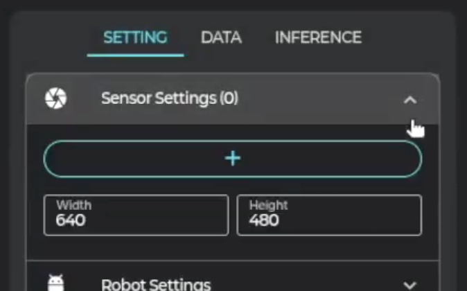
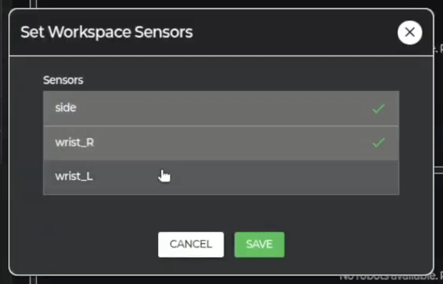
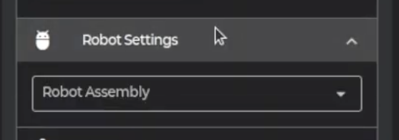

7 Workspace
작업 환경 설정 및 워크스페이스 관리 방법을 안내합니다.
🗂️ Workspace란?
Workspace 페이지는 로봇에게 시키고 싶은 작업에 대한 페이지입니다.
작업 환경을 설정하고, 데이터를 수집하고, 추론을 통해 직접 일을 시킬 수 있습니다.
⚙️ 작업 환경 설정
-
1. 워크스페이스 선택
Workspace 탭 → "Select Workspace"에서 워크스페이스를 선택하거나 새로 생성합니다. → Setting 탭으로 이동합니다.
-
2. 센서 선택
 
작업에서 사용하고 싶은 센서 및 화질을 선택합니다. 선택 시 카메라 화면이 선택한 화질로 표시됩니다.
-
3. 로봇 어셈블리 선택

작업에서 사용하고 싶은 로봇 어셈블리를 선택합니다. 선택 시, 로봇의 현재 포지션 값과 액션 값(리더 로봇의 포지션 값)이 화면에 표시됩니다.

-
4. 에피소드 길이 설정
작업 데이터의 에피소드 길이를 선택합니다.
워크스페이스 설정은 데이터 수집 전에 반드시 완료해야 합니다. 작업마다 별도의 워크스페이스를 만들어 관리하는 것을 권장합니다.